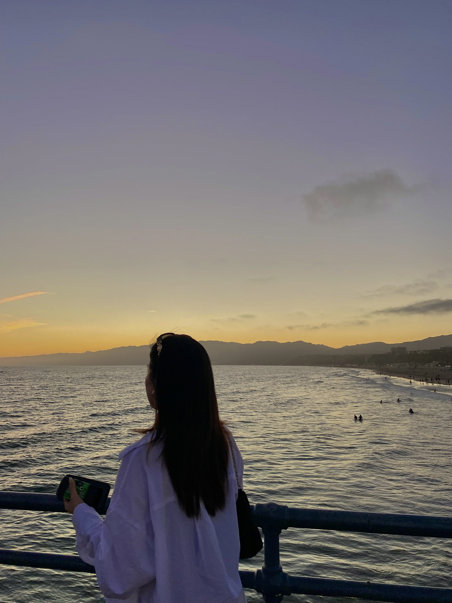

Welcome! My name is Juliann (Juli, for short) and I created this website as a way to track my progress throughout the course of my Cybersecurity degree program. This is a personal website that includes some general information about me, my contact information to connect, and a blog that covers topics like travel, food, skincare, and more.
As I move through the program, I plan to share more projects that show how my skills have developed over time; this website being the first for my portfolio. Thanks for stopping by - I'd love any feedback you may have!

Return to top of page